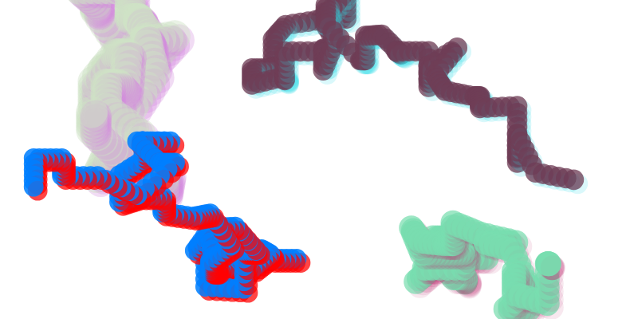
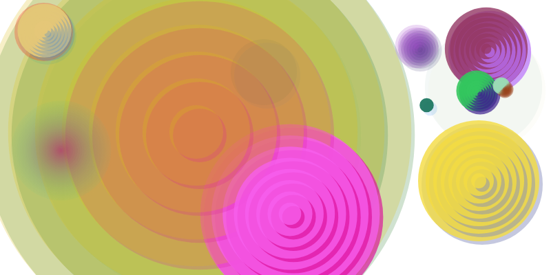
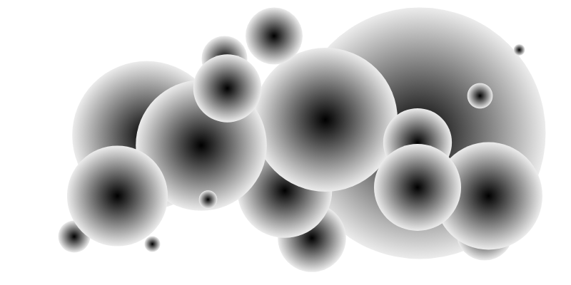
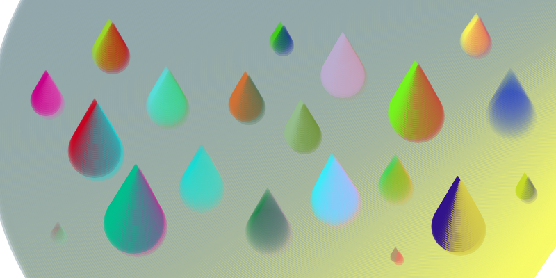

Canvas (noun)
: a piece of cloth backed or framed as a surface for a painting.
// an artist's canvas
 Random-Style Mode
- press the dice button at the right to turn on the random-style mode.
- in random-style mode, styles would be re-rolled in every stroke.
- the re-rolled styles include filling color, stroking color, shadow color, line width, and dash interval
- stroke arbitrarily on the canvas, and feel the power of randomness.
Random-Style Mode
- press the dice button at the right to turn on the random-style mode.
- in random-style mode, styles would be re-rolled in every stroke.
- the re-rolled styles include filling color, stroking color, shadow color, line width, and dash interval
- stroke arbitrarily on the canvas, and feel the power of randomness.
 CreateDynamicBall
- press and drag the mouse to control the size and initial velocity of the ball.
- your dragging direction would determine the direction of the initial velocity.
- watch the ball bouncing within the canvas!
CreateDynamicBall
- press and drag the mouse to control the size and initial velocity of the ball.
- your dragging direction would determine the direction of the initial velocity.
- watch the ball bouncing within the canvas!

CreateMarchingWorm
- press and drag the mouse to control the size of the worm.
- the worm would then move randomly and leave its trace on the canvas.
- it might take a lot of undos to make a result that works for you :(

CreateDynamicDisc
- press and drag the mouse to control the size of the disc.
- the disc would then be re-drawn eight times, each time with a smaller radius.
- if two discs are overlapped and their birth time are close enough, they may seems inlaid with each other.

CreateShadowBall
- press and drag the mouse to control the size of the shadow-ball.
- the shadow ball has a radial color gradient form its center to its periphery.
- the color of the center would be determined by and that of the periphery would be determined by .

CreateDynamicCorn
- press and drag the mouse to control the size of the seed.
- release the mouse to see the corn grow.
- note that, your dragging direction would determine the growing direction of the corn.